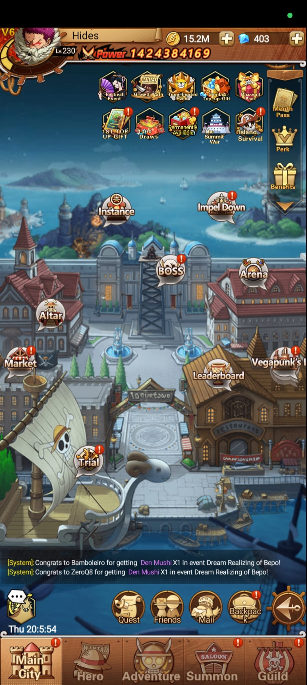

Captura
Mapa de accesos

Pantalla inicial
La ciudad principal funciona como menú central del juego. Desde esta vista se accede a modos de combate, eventos, recompensas, mercado, invocación, gremio y gestión de héroes.
Captura

Accesos del mapa
| Acceso | Zona | Uso probable |
|---|---|---|
| Instance | Centro superior | Mazmorras para conseguir recursos, equipo y diales. |
| Impel Down | Derecha superior | Torre por stages con cofres, shards SSR y submodo Endless Prison. |
| Boss | Centro | Combate contra jefes, rankings de daño y modos como Sea Train. |
| Arena | Derecha | PvP o clasificación contra otros jugadores. |
| Altar | Izquierda | Sistema de reinicio, disolución e intercambio. |
| Market | Izquierda inferior | Tienda para comprar recursos, fragmentos o objetos. |
| Trial | Abajo izquierda | Pruebas diarias o desafÃos por etapas. |
| Leaderboard | Abajo centro | Ranking de jugadores, gremios y modos. |
| Vegapunk's | Derecha inferior | Acceso a Vegapunk's Lab: S Lab, SS Lab y SSS Lab con recompensas idle. |
Menú inferior
Regresa a la ciudad principal y accesos de actividad.
Gestión de personajes, nivel, equipo, mejoras y poder.
Campaña o avance principal por etapas.
Invocación de héroes o fragmentos.
Contenido de gremio y funciones sociales.